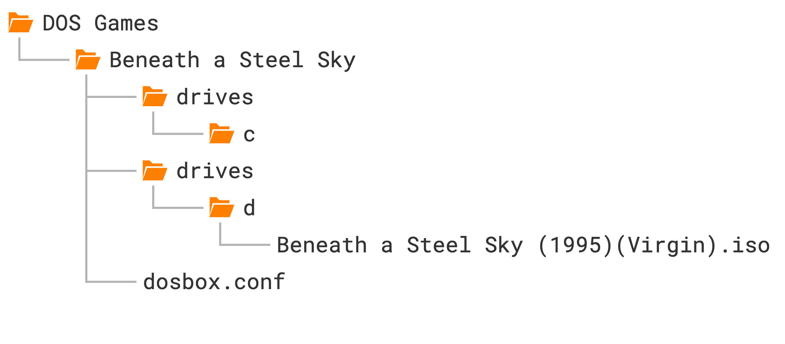

Beneath a Steel Sky¶
The next game we’re going to set up is Beneath a Steel Sky, a cyberpunk sci-fi adventure game from 1994. It’s one of the standout timeless classics of the adventure genre, and best of all, Revolution Software released the game as freeware in 2003 (see their accompanying notes here).
Launching games more easily¶
Before we delve into the setup instructions, a few words about launching our growing collection of games more easily. Having to navigate to the game’s folder every time we want to launch gets old fast. Here’s how to skip this step:
Windows¶
-
Create a batch file called
Start DOSBox Staging.batwith the following content:That’s the default installation path chosen by the installer.
%USERNAME%is your Windows user name. If you installed DOSBox Staging to a different folder, adjust the path accordingly. -
Copy this batch file into your individual game folders and rename them to the names of the games (e.g.,
Prince of Persia.bat). -
Right-click on the batch file icon and select Send to → Desktop (create shortcut) in the context menu.
-
Now you can double-click the new Prince of Persia.bat – Shortcut icon on your desktop to start the game (you can rename the icon to whatever you like; this won’t change the name of the batch file it references).
macOS¶
You can rename the Start DOSBox Staging icons in the individual game folders to the names of the games, then use Spotlight Search to start a game.
For example, rename Start DOSBox Staging in the Prince of Persia folder
to Prince of Persia. Start Spotlight Search with Cmd+Space, type in
“Prince”, and press Enter on the result to launch the game.
Linux¶
The easiest way is to create a shell script with the following content
(modify the path passed to --working-dir so it points to your game
directory):
Then create a desktop icon that launches this script, or start it using your desktop environment’s preferred launcher.
Mounting a CD-ROM image¶
We will set up the liberated “talkie” CD-ROM version of the game that has
full voice-acting. Create a new Beneath a Steel Sky subfolder inside your
DOS Games folder, then the usual drives/c subfolder within it. Download
the ISO CD-ROM
image
from the Beneath a Steel
Sky item at the
Internet Archive and put the .iso file into a new drives/d subfolder
inside your Beneath a Steel Sky game folder.
Also grab the scan of the Security Manual and the comic book included in the boxed version of the game.
For the visually inclined, this is the structure we’ll end up with:

Our C: drive is the hard drive, so the CD-ROM drive uses the letter D: by
convention. Just like the drives/c auto-mounting mechanism we’ve seen
before, the CD image in the drives/d folder auto-mounts as the D: drive.
Installing the game¶
Most games that come on CD images must be installed on the hard drive first.
Usually there’s an executable called INSTALL.EXE or SETUP.EXE in the root
directory of the CD (the extension could be .COM or .BAT as well).
Switch to the D: drive with d:, then run dir to inspect the contents of
the CD:
Volume in drive D is BASS
Directory of D:\
INSTALL EXE 28,846 06/15/1994 8:56a
README TXT 1,569 09/08/2005 1:34a
SKY DNR 40,796 07/07/1994 8:40a
SKY DSK 72,429,382 07/07/1994 8:40a
SKY EXE 402,622 07/07/1994 7:21a
SKY RST 53,720 07/07/1994 7:19a
6 file(s) 72,956,935 bytes
0 dir(s) 0 bytes free
We have two .EXE files and one text file. README.TXT just contains some
legal notice we don’t need to worry about (view it with more README.TXT if
you’re curious). INSTALL.EXE is what we’re after, so run that.
We’re greeted by a pretty standard-looking text-mode installer. Either press any key or wait a few seconds to progress to the second screen, where you select the installation path:

You can navigate the interface with the cursor keys, Esc, Enter, and
the mouse. The default C:\SKY install location is fine, so just accept it
with Enter.
The installer then takes us to the setup screen, where we choose the language of the in-game text (voice-acting is English-only) and the sound settings:

English is fine, and the game has auto-detected our sound card correctly (Sound Blaster 16 — the card DOSBox emulates by default), so accept these settings. Now the counterintuitive part: to finish the installation and save the settings, we need to press the Exit Install button, which takes us to the (guess what?) Exit Install dialog:

Here you need to press Save Setup to finalise the settings and exit the installer.
As you can see, this is not exactly a masterclass in user interface design, but it does the job. Expect many DOS-era install and setup utilities to be similarly slightly illogical — often, it’s not completely obvious what to do, but it’s not too hard to figure out either. Reading the manual or some trial and error might help, too.
Anyway, after pressing Save Setup, the installer will exit and print out the following instructions:
Alrighty, let’s do as the computer says! It’s the easiest to put the above
commands into the [autoexec] section of our config, but let’s comment the
last sky command out for now by preceding it with a # character because we
don’t want to start the game just yet:
Changing the current directory¶
So what is this cd \sky command? Does it have something to do with the cd
subfolder where we put our CD-ROM image?
No, that’s just a coincidence. cd stands for change directory — it
changes the current directory, which is displayed as part of the DOS prompt.
Let’s break down these lines:
The first command c: switches to the C: drive (the current drive is the
special built-in Z: drive when DOSBox starts). The second, cd \sky, changes
the current directory to the sky directory at the root of C:. cd sky
would also work, since the current directory is already root right after
switching drives.
How do you go up a level? cd .. (two dots for “parent directory”, one dot
for “current directory”).
Straight to root? cd \ (the backslash means “root directory”).
You can also jump straight to a nested subdirectory in one command, e.g. if
you have one\two\three, you can go there directly from anywhere with cd
\one\two\three (imaginary example):
Play around with the drive and directory commands, then uncomment the last
sky command in [autoexec] (remove the #).
Warning
You cannot switch drives with cd (e.g. cd z: or cd z won’t work) —
you must use the drive letter followed by a colon (z:). If you run cd
z, DOS will try to enter a folder called z in the current directory and
error out if it doesn’t exist.
Adjusting volume levels¶
After starting the game, don’t watch the intro yet — press Esc to jump straight to the opening scene. There’s music playing, so far so good. Move the cursor over the door on the right, and when it turns into a crosshair and “Door” appears, click it. You’ll hear our protagonist speak — but barely audible, since the music is too loud.
There are a couple of ways to fix that. You can press F5 to bring up the game’s options dialog where you can lower the music volume, but that would make the total audio output too quiet. Worse yet, the setting doesn’t get saved, so you’d need to do this every single time when starting up the game.
As we’ve learned before, Sound Blaster games tend to use the card’s OPL synthesiser for music and its digital audio capabilities for speech. Since the OPL synth and digital audio have their own dedicated mixer channels, their volumes can be adjusted independently.
“Wait a minute, what mixer channels now?!”
DOSBox has an integrated audio mixer. Every emulated sound card has its own channel(s), and “composite” devices like the Sound Blaster have two: one for the OPL synthesiser, one for digital audio.
Execute the mixer command at the DOS prompt to view the current state of the
mixer:

The first channel is the MASTER channel; this is the summed output of all
other channels, and it’s always present. Below that is the CDAUDIO channel,
the OPL and PCSPEAKER channels (you can guess these two, right?), and
finally, the SB channel, which is for the digital audio output of the Sound
Blaster.
The Sound Blaster card and PC speaker are enabled by default, which is why their
channels appear in the mixer. The CDAUDIO channel is added automatically
whenever we mount a CD-ROM image (as the CD image might contain audio tracks).
To adjust a channel’s volume, use mixer <channel> <percentage>. To raise
SB to 500%:
By default the command prints the new mixer state after the adjustment:

You can combine multiple channels in one line, e.g. setting OPL to 50% and
SB to 500%:
Run mixer /? or help mixer for the full list of commands.
Do we need to run these adjustments manually every time? Of course not —
put them in [autoexec]. The /noshow argument suppresses the mixer state
printout, which we don’t need in an automated startup script.
Changing the emulated Sound Blaster model¶
DOSBox emulates the Sound Blaster 16 by default. This card can emulate all earlier Sound Blaster models and offers the widest compatibility with DOS games.
But back in the day there were more Sound Blaster variants and clones than you could shake a stick at, many with quite different default volume levels. We don’t know which model this game’s developers used, so it’s worth trying a few. Let’s start with a first-revision Sound Blaster Pro:
We want to hear how the Sound Blaster Pro 2 sounds with the default,
unaltered volume levels, so make sure to comment out the previously added
mixer command in the [autoexec] section by prefixing it with a #
character:
This simple change alone does the trick: the speech can now be heard clearly
over the music, and the overall volume is good too! You can still fine-tune
individual channel volumes with mixer if you like.
Disabling the Sound Blaster mixer¶
Another option: don’t let the game mess with the OPL and digital audio
volumes at all. Starting from the Sound Blaster Pro 1, programs can alter the
card’s internal mixer levels, but we can disable that with sbmixer.
Comment out sbtype (back to the default SB16) and keep the mixer command
in [autoexec] commented out too:
Well, that’s another way to fix the issue — the speech is now loud and clear!
But it’s a bit too loud. While the balance between the music and speech was
just perfect on the Sound Blaster Pro 2, the speech is now overpowering the
music. Compensating for that by lowering the SB channel’s volume in the
mixer is certainly an option, but we can conclude the developers must have
tuned the volume levels for a Sound Blaster Pro, so setting sbtype = sbpro2
is the best solution.
When the game knows best
Not letting a game adjust volume levels can sometimes backfire, e.g. in a game that intelligently lowers OPL music whenever speech is playing. But it’s worth a shot — some games benefit from wrestling control from them and putting the mixer into “manual mode”.
Adjusting the emulated CPU speed¶
If you did watch the intro (which I told you to skip, but no hard feelings), you’ll have heard severe audio stuttering from the moment the narrator starts speaking. If you haven’t, watch it now!
What’s happening? DOS gaming spans almost two decades, with wildly different CPU speeds in use throughout (see CPU for the full reference). DOSBox doesn’t emulate a specific CPU, just a “generic” one — so how does it know what speed to run a given game at?
It doesn’t.
DOS games fall into two categories: older, real-mode games and newer, protected-mode games. CPU-hungry games (FPS titles, flight sims) tend to be protected mode, while pre-1993 real-mode games are generally much less demanding. Figuring out the exact CPU speed a game needs is nearly impossible, but detecting real vs. protected mode is trivial, so DOSBox does automatic speed calibration by default:
- Real mode games: 3000 CPU instructions per millisecond (roughly a 386SX at 20 MHz)
- Protected mode games: 60,000 instructions per millisecond (roughly a Pentium at 90 MHz)
The reasoning: older games are often sensitive to CPU speed and might misbehave if it’s too fast, hence the conservative default; newer games benefit from extra speed and generally tolerate faster processors fine.
This gets all games running, but manual tweaking is often needed to make a particular game run smoothly. Protected-mode games at “too high” cycle counts are especially problematic since there’s not enough headroom left for glitch-free audio — there’s no point emulating a faster CPU than the game needs, since that extra power could go toward smoother audio instead.
Beneath a Steel Sky is a protected-mode game — how do we know? Comment out
the sky command in [autoexec], launch DOSBox Staging windowed, and check
the title bar. DOSBox itself always starts in real mode:
That matches the real-mode default of 3000 cycles/ms. Now run sky and watch
the title bar change:
SKY.EXE is now running, and it’s at 60,000 cycles/ms — our protected-mode
default, confirming this is a protected-mode game.
That’s the crux of the stuttering: not enough horsepower left for
time-critical audio. The fix is to cap the cycle count instead of letting
DOSBox run wild. cpu_cycles sets real-mode cycles, cpu_cycles_protected
sets protected-mode cycles:
Restart DOSBox Staging and watch the intro again — the audio glitches
should be gone. Well done, time for a beer (or your beverage of choice)!


Real and protected mode
In simple terms, real mode is the legacy 16-bit mode of a 386 or later CPU, while protected mode takes full advantage of its capabilities in 32-bit mode. Protected mode couldn’t be widely used until 386+ CPUs became common, around 1993; games from then on use it almost exclusively.
You can spot protected-mode games by the presence of DOS
extenders like
DOS4GW.EXE, PMODEW.EXE, or CWSDPMI.EXE in their game directories,
and by characteristic startup messages. But you don’t need to worry about
any of that — DOSBox tells you with 100% accuracy via the title bar, so
just leave cpu_cycles/cpu_cycles_protected at their defaults (or set
custom values) and watch the title as the game runs.
Finding the correct speed for a game¶
Okay, so why set cpu_cycles_protected to 25 000 and not any other number? The game’s manual states
that a 386 or better processor is required. Indeed, the game works fine at
6000 cycles, which approximates a 386DX CPU running at 33 MHz, but the loading
times are a bit on the slow side. Setting the CPU cycles to
25 000 — which roughly corresponds to a 486DX2/66 — speeds up the
loading considerably without causing any negative side effects. This is not
surprising as the DX2/66 was one of the
most popular CPUs in the 1990s for gaming. This is what Wikipedia says about
it:
The i486DX2-66 was a very popular processor for video game enthusiasts in the early to mid-90s. Often coupled with 4 to 8 MB of RAM and a VLB video card, this CPU was capable of playing virtually every game title available for years after its release, right up to the end of the MS-DOS game era, making it a “sweet spot” in terms of CPU performance and longevity.
The following table gives you reasonable rough cycles values for the most popular processors:
| Emulated CPU | MHz | Cycles | Year |
|---|---|---|---|
| 8088 | 4.77 | 300 | 1981 |
| 286 | 8 | 700 | 1984 |
| 286 | 12 | 1500 | 1986 |
| 286 | 25 | 3000 | 1988 |
| 386DX | 25 | 4500 | 1988 |
| 386DX | 33 | 6000 | 1989 |
| 486DX | 33 | 12 000 | 1990 |
| 486DX2 | 66 | 25 000 | 1992 |
| 486DX4 | 100 | 35 000 | 1994 |
| Intel Pentium | 90 | 50 000 | 1994 |
| Intel Pentium | 100 | 60 000 | 1994 |
| Intel Pentium MMX | 166 | 100 000 | 1997 |
| Intel Pentium II | 300 | 200 000 | 1997 |
You can also look this table up in the online help via cpu_cycles /?.
Treat these values as starting points only — accurately emulating any given processor’s speed isn’t really possible, given the “abstract” nature of DOSBox’s CPU emulation. In practice, though, that doesn’t matter much: you just need to find the cycles value the game works well with.
For 2D games from the 90s, an emulated 486DX2/66 handles anything you throw at it. For 3D games you’ll likely need Pentium or Pentium MMX levels, and Pentium II speeds for 3D SVGA gaming at 640×480 or higher. For older real-mode games, the default 3000 cycles is a good starting point, but try the 300–10,000 range if it needs improvement.
You can fine-tune cycles live with Ctrl+F11/Ctrl+F12 (Cmd+F11/ Cmd+F12 on Mac) — these increase cycles by 10% or decrease by 20% respectively. Once you land on a good setting, update your config with the value shown in the title bar.
Always aim for the minimum cycles value that gives adequate performance, to conserve host CPU power and reduce the odds of audio glitches — overdoing it only makes things worse. See also this list of CPU speed sensitive games for further tips.
Setting up Roland MT-32 sound¶
Installing the MT-32 ROMs¶
You might have noticed the game offers a sound option called “Roland” in its setup utility. What this refers to is the Roland MT-32 family of MIDI sound modules. These were external devices you could connect to your PC that offered far more realistic and higher-quality music than any Sound Blaster or AdLib sound card was capable of. They were the Cadillacs of DOS gaming audio for a while (they were priced accordingly, too), and many find they still sound excellent even by today’s standards. The MIDI chapter explains how MIDI works and how to choose the right device for each game.
DOSBox Staging can emulate all common variants of the MT-32 family (see the Roland MT-32 page for the full documentation), but it requires ROM dumps of the original hardware devices to do so. So first, we need to download these ROMs from here as a ZIP package, then copy the contents of the archive into our designated MT‑32 ROM folder:
| Windows | C:\Users\%USERNAME%\AppData\Local\DOSBox\mt32-roms\ |
| macOS | /Users/<USERNAME>/Library/Preferences/DOSBox/mt32-roms/ |
| Linux | $HOME/.config/dosbox/mt32-roms/ |
If the above download link doesn’t work, search for “mt32 roms mame” and “cm32l roms mame” in your favourite search engine and you’ll figure out the rest…
After copying the ROM files, start DOSBox Staging and run MIXER /LISTMIDI.
This verifies your ROM files and prints the available MT-32 models:

Selecting the MT-32 version¶
As you might have guessed already, you can tell DOSBox Staging to emulate an MT-32 model of a specific revision. In practice, these two models will cover 99% of your gaming needs:
cm32l- Unless a specific model is requested, DOSBox Staging emulates the Roland CM-32L by default, for the best overall compatibility. This is a 2nd-gen MT-32 with 32 additional sound effects many games use. Studios like LucasArts tended to favour the CM-32L, so their games sound a bit better on it.
mt32_old- Most older games — notably the entire early Sierra adventure catalogue —
need a 1st-gen MT-32 and will refuse to work correctly, or sound wrong, on
anything else. Use
mt32_oldfor those.
Once you’ve enabled the MT-32, MIXER /LISTMIDI will show the active MT-32
model:

How do you figure out which model a particular game needs? You can’t easily do that without research and trial and error, but thanks to some dedicated individuals, there’s a list of MT-32-compatible computer games that tells you the correct model for most well-known titles.
Let’s consult the list and see what it says about Beneath a Steel Sky!
Requires CM-series/LAPC-I for proper MT-32 output. Buffer overflows on MT-32 ‘old’. Combined MT-32/SB output only possible using ScummVM
Well, the list knows best, so we’ll use the CM-32L for our game (as we’ve done in the above config example).
To appreciate the difference, you can try running the game with the
mt32_old model after you have successfully set it up for the cm32l.
You’ll find the sound effects in the opening scene sound a lot better on the
CM-32L.
Configuring the game for the MT-32¶
So now DOSBox Staging emulates the CM-32L, but we also need to set up the game for “Roland sound”. (They could’ve been a bit more precise and told us the game works best with the CM-32L, couldn’t they? It’s not even mentioned in the manual!)
Many games have a dedicated setup utility in the same directory where the main
game executable resides. This is usually called SETUP.EXE, SETSOUND.EXE,
SOUND.EXE, SOUND.BAT, or something similar. There is no standard; every
game is different. You’ll need to poke around a bit; a good starting point is
to list all executables in the main game folder with the dir *.exe, dir
*.com, and dir *.bat commands or the ls command and attempt running the
most promising-looking ones. The manual might also offer some helpful
pointers, and so can the odd text file (.TXT extension) in the installation
directory or the root directory of the CD (if the game came on a CD-ROM).
Certain games have a combined installer and setup utility, usually called
INSTALL.EXE or SETUP.EXE, which can be slightly disorienting for people
with modern sensibilities. You’ll get used to it.
This particular game turns things up a notch and does not copy the
combined installer-and-setup utility into C:\SKY as one would rightly expect. To
reconfigure the game, you’ll need to run INSTALL.EXE from the CD, so from the
D: drive (I’ve told you — setting up the game itself is often part of the
adventure!).
So let’s do that. As we’ve already installed the game on our C: drive, we’ll need to press Esc instead of Enter in the first Path Selection Window. Not exactly intuitive, but whatever. Now we’re in the Setup Menu screen, where we can change the language and configure the sound options. Select Roland sound, then press the Exit Install and Save Setup buttons to save your settings (don’t even get me started…).
Okay, now the moment of truth: start the game with the sky command. If
nothing went sideways, we should hear the much-improved, glorious MT-32
soundtrack! Now we’re cooking with gas!
So let’s inspect our favourite door one more time by moving the cursor over it and then pressing the left mouse button — hey, where did the voice-over go?! Yeah… you’ve probably glossed over this little detail in the tip from the MT-32 wiki page:
Combined MT-32/SB output only possible using ScummVM
What this means for us ordinary mortals is that the original game can either use the MT-32 for MIDI music and sound effects, and you get no digital speech, or only the Sound Blaster for OPL music, digital sound effects, and speech. MT-32 MIDI music and sound effects combined with digital speech via the Sound Blaster — the computer says no, buddy.
The game has just taught us an important life lesson: you can’t have everything, especially not in the world of older DOS games. You’ll have to pick what you value most: better music and only subtitles or full voice-acting with a slightly worse soundtrack. I’m opting for the latter, and remember, we can always enhance the Sound Blaster / AdLib music by adding chorus and reverb. This will get us a little bit closer to the MT-32 soundtrack:
Getting MT-32 music with speech (after all)¶
Except some people go, “Yeah, screw life lessons, I won’t have it!” Believe it or not, some people are still creating patches for 30-year-old DOS games to improve them in various ways. One such distinguished gentleman found a way to get MT-32 music and Sound Blaster digital speech and sound effects playing at the same time in Beneath a Steel Sky, so we’ll use his patch to get the most out of the game.
Download the skydrv.zip from
here, unzip it, and
then copy skydrv.com into drives/c/SKY. As per the forum post, you can run
the patched game from the mounted CD with this command:
Skip the intro and inspect the door again. Whoa, magic! MT-32 music and
speech at the same time! Yikes! Best put this into our
[autoexec] section!
Aspect ratio correction¶
We’re on a roll — from audio to graphics next! If you’ve checked out the included comic book (you should!) and have a keen eye, you might notice the images in the intro sequence, scanned from the comics, appear vertically stretched on-screen — exactly 20% taller than they should be (trust me on this for a moment).
Where’s this 20% stretch coming from? DOSBox Staging enables aspect ratio correction by default, making 320×200 graphics appear as they would on a 4:3 aspect ratio VGA monitor, which requires pixels drawn 20% taller. That’s the sensible default, since correction is absolutely needed for most DOS games to look right — but this game is one of the exceptions. The tell-tale sign is that the intro artwork was scanned using square pixels, so we need to disable correction for such games; with it off, we always get square pixels (1:1 pixel aspect ratio). This is explained in more detail in the Aspect ratios & scaling section of the manual.

That’s easy to fix; we’ll also set the viewport resolution for roughly 4x integer scaling, since the game would look too blocky stretched to fullscreen:

Beneath a Steel Sky with aspect ratio correction disabled

Well, we won’t escape this way…
This would’ve been a misguided effort if it only fixed the intro but not the in-game visuals — fortunately, both were drawn assuming square pixels. The floppy disk icon, for instance, looks like a tallish rectangle with aspect correction enabled, when it should be a perfect square; human figures and circular objects appear slightly elongated too. Revolution was a European studio, released the game for PAL Amigas (which have square pixels), and was generally Amiga-first — for such games, disabling aspect ratio correction is almost always correct.
Rules of thumb:
aspect = on
- For most games primarily developed for DOS — the DOSBox Staging default, and correct for the overwhelming majority of DOS games out of the box.
- For games primarily developed for the Amiga or Atari ST by a North American studio for the NTSC standard (even if made by a European studio but commissioned for the North American market).
aspect = square-pixels
- For most games primarily developed by European studios for the Amiga or Atari ST.
Notable European studios: Bitmap Brothers, Bullfrog, Coktel Vision, Core Design, DMA Design, Delphine, Digital Illusions, Firebird, Horror Soft / Adventure Soft, Infogrames, Level 9, Magnetic Scrolls, Ocean, Psygnosis, Revolution, Sensible Software, Silmarils, Team 17, Thalamus, Thalion, Ubisoft
From squares to rectangles
For most 1980s/’90s games with 2D graphics, art was created once for the “leading platform” and reused across conversions — drawing it multiple times in different aspect ratios wasn’t economical.
CRT monitors in the DOS era had a 4:3 aspect ratio, so in 320×200 mode pixels had to be 20% taller to fill the screen. DOSBox Staging does this correction by default, meaning DOS games assume a 1:1.2 pixel aspect ratio to look correct as intended. The full derivation is in Aspect ratios & scaling.
For games where the leading platform was Amiga/Atari ST and the studio was European, the analog TV standard was PAL. European Amigas were PAL machines with square pixels in the 320×256 mode most PAL Amiga games used. Studios drew art assuming square pixels but used only a 320×200 portion of that 320×256 area. On PAL Amigas the art appeared correct but letterboxed; on NTSC Amigas and DOS PCs with 320×200 mode, it filled the screen but appeared stretched 20% vertically. No one complained, and it saved money, so this became common practice. Now you can enjoy these games in their intended aspect ratio by disabling DOSBox Staging’s default correction.
Don’t trust the circles!
Keener observers might notice the intro image on the left features a circle that only looks perfect with aspect correction enabled, in which case the comic-scanned image is stretched. With correction disabled the circle looks like a squashed oval, but the comic image looks right.
The explanation: whoever drew that circle around the scanned image did so assuming 1:1.2 pixel aspect ratio, so it looked perfectly round to him on his VGA monitor.
This is a common theme — some games get assets added during porting, resulting in mixed aspect ratio assets within a single game, sometimes impossible to fully reconcile with one fixed pixel aspect ratio.
Generally, you cannot trust the circles. Sometimes they’ll look right with the correct settings, sometimes not. It’s more reliable to judge aspect ratio by common objects, human bodies, and faces.
Arcade monitor emulation¶
Now that we’ve brought up the Amiga, it’s worth mentioning a fun, if not quite authentic, feature of the CRT emulation!
Home computer and arcade monitors (15 kHz monitors), like the Commodore monitors typically used with Amigas, were quite different from VGA CRTs. They displayed low-resolution content with thick scanlines, similar to EGA monitors, and were less sharp — not great for text or spreadsheets, but it flatters low-resolution pixel art.
Enable this fantasy mode with:
Now you can play with Amiga-like graphics and MT-32 or OPL sound from a strange parallel universe! 😎

Beneath a Steel Sky from a parallel universe running on an Amiga in 256-colour mode
Final configuration¶
Putting it all together, this is our final config:
[cpu]
cpu_cycles_protected = 25000
[sdl]
fullscreen = on
[render]
aspect = square-pixels
viewport = 1280x800
# uncomment for arcade monitor emulation
#shader = crt-auto-arcade
[sblaster]
sbmixer = off
[midi]
mididevice = mt32
[mixer]
reverb = large
chorus = strong
[autoexec]
# original game
#c:
#cd sky
#sky
# patched game (MT-32 music & SB speech/sfx)
d:
c:\sky\skydrv cfg=c:\sky
exit
The patched game is clearly superior, but you can still run the original:
uncomment the three lines below # original game, then comment out the two
lines after # patched game. You can switch between Roland MT-32 and Sound
Blaster/AdLib sound at will by reconfiguring the game via INSTALL.EXE —
no further DOSBox config changes needed.
About reverb presets
Enabling reverb and chorus does not add these effects to the MT-32’s output — that’s undesirable, since the MT-32 has its own built-in reverb and chorus, and DOSBox Staging is smart enough not to double them up.
The reverb presets add a small amount of reverb to the digital audio
(PCM) outputs, like the SB channel, mostly to help it blend better with
the synthesiser’s output (e.g. the OPL channel), which has a more
prominent reverb.